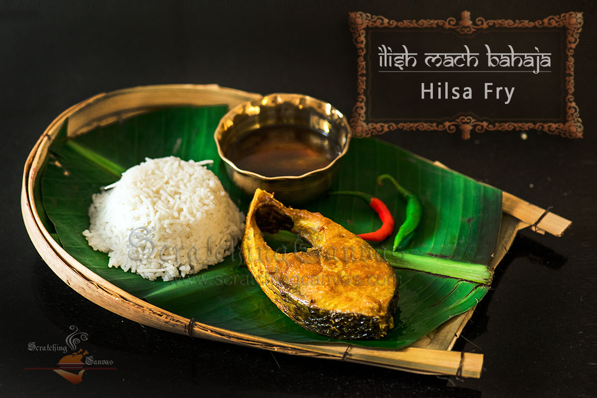

Ilish Mach Bhaja

Home
Description
Ilish Maach Bhaja (Hilsa Fish Fry) is a classic fish fry dish prepared in Bengali cuisine. It is prepared on all
special occasion as fish is considered auspicious in Bengali culture. Hisla Fish Fry - Ilish Maach Bhaja doesn't
really call for a recipe, but it definitely needs to be recorded and shared.
Ingredients
- 8 steaks of hilsa fish
- 1 teaspoon salt
- ½ teaspoon turmeric
- ¼ cup mustard oil
- ½ red onion
- 2 fresh green chili
Steps
- Season the fish fillet with salt and turmeric and keep aside for 10 minutes.
- Pour the oil in a heavy bottom wok and let it heat until you see smoke. This is a very critical step. If the
oil is not hot enough, and you drop the fish fillets, it will get stuck to the bottom of the pan.
- Slide the marinated fish very carefully in the hot oil.
- Let it fry for 2 minutes and the try to flip it very carefully. If it feels like it is stuck to the bottom
of the pan, give it 1 to 2 more minutes for the fish to fry completely.
- Flip and fry for 2 more minutes.
- Take it off the pan once done and switch off the heat.
- The oil is still pretty hot, so drop the sliced red onion and slit green chili. Let it fry for 1 minute.
- Serve the pipping hot Ilish Maach Bhaja with steamed rice and top it with the cooked soft onion, green chili
and some of that aromatic mustard oil.
- Enjoy while it's warm.